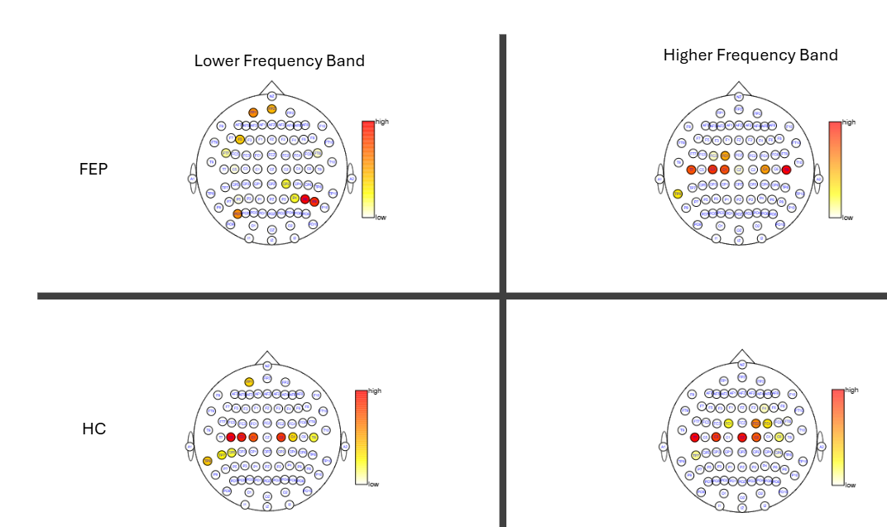

High Dimensional Time Series with Neuroimaging Application
EEG is a noninvasive imaging technology that records the electrical activity of the brain through elctrods (channels) that are attached to the scalp. Studying the electrical patterns of activity of the brain is important in hat it helps neurologists with diagnisis of mental disorders such as schizophrenia. In particular, of great interest is to uncover high active regions of the brain and to indentify the associated frequency bands that exibit high power. However, the time series of EEG signals is high dimensional with complex dependence structure. In addition, when the data is recorded over a long time window it often exibit nonstationary behaviour. This has inspired me to develop methodologies that can answer neurologists questions while adressing methodological challenges associated with high dimensionality and complex dependence structure in the EEG data.
Localized Sparse Principal Component Analysis of Multivariate Time Series in Frequency Domain
Evidence suggests that electrophysiological activity at different frequencies and locations of the brain can be biomarkers for schizophrenia. Since brain is a coherent system, we formulated the problem of identifying highly active regions of the brain along with the frequency bands where the power is concentrated as a dimension reduction problem in the frequency domain. In our model bulding, we assume that there exist a low dimensional principal subspace that is sparse in coordinates (channels), is localized in frequency domain, and is continuous as a function of frequency over its frequency support. Despite the nonconvexity of the corresponding optimization problem, we proposed a sequential procedure that can consistently estimated the underlying principal subspaces.
We applied our method in separate analyses of 64-channel EEG recording from two individuals to understand personal electrophysiological activity by analyzing each subject's data separately. One is from a patient who is experiencing an episode of psychosis for the first time (FEP), which can be a precursor to the eventual development of schizophrenia, and has been emitted to a psychiatric emergency department. The second is from a healthy control with no history of mental illness (HC). Principal subspaces for both participants are localized within the union of a band of very-low frequencies that is contained within the traditional delta band of frequencies less than 4 Hz, and with a band that is contained in the traditional theta band of frequencies between 4 - 8 Hz. However, as opposed to collapsing power within the historically defined delta and theta bands, the boundaries of which are displayed in Frequency/Spatial plot, the data-driven LSPCA identified narrower, more parsimonious, person-specific bands. Next, we explored the spatial localization of power within these identified bands. The spatial map of the total power within the selected frequency bands illustrates that power in both the delta and theta band are concentrated in the central regions of the HC; theta power in the FEP participant is also concentrated in the central region. However, delta power for the FEP participant is primarily located in the frontopolar and parietal regions.
More technical details of the mathematical formulation and theoretical analysis along with simulation studies of the proposed localized and sparse principal component analysis can be found in the arXiv link of the manuscript.
Spatial map
Future Work
The EEG application has inspired us to continue our investigation in addressing further questions and challenges with the analysis of the data. In particular, we are working on the extension of the LSPCA to nonstationary time series. In addtion, we have been working on the estension of the method to incorporate multiple subjects to perform discriminate analysis. More on the results of the estensions of our method will appear here. Stay tuned!